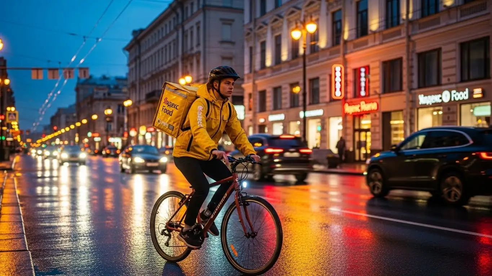

Работа курьером Яндекс Еды в Нижневартовске: доход 2025-2026
- Работа курьером Яндекс Еды в Нижневартовске: для кого эта вакансия и что вы получите
- Сколько вы будете зарабатывать курьером в Нижневартовске: калькулятор дохода и разбор выплат
- Реальный заработок курьера в Нижневартовске: смены и месячный доход
- График работы и форматы занятости
- Требования к кандидату и документы
- Самозанятость, налоги и юридическая чистота
- Пошаговое оформление и первый выход на линию в Нижневартовске
- Пешком, на вело или на авто: что выгоднее в Нижневартовске
- Районы, маршруты и «топовые» зоны заказов в Нижневартовске
- Безопасность, страховка, штрафы и оплата простоя
- Плюсы и возможные минусы работы курьером в Нижневартовске
- Реальные истории и отзывы курьеров из Нижневартовска
- Ответы на главные вопросы о работе курьером Яндекс Еды в Нижневартовске
- Короткие ответы на главные вопросы
- Итоги и ваш следующий шаг
Все города
Думаешь, работа курьером Яндекс Еда в Нижневартовске — это просто крутить педали или руль под музыку и получать легкие деньги? А не боишься, что в первый же серьезный мороз убьешь подвеску на наших дорогах, а заработка едва хватит на бензин и штрафы за опоздание, пока стоишь в пробке на мосту через Обь? Забудь рекламные обещания про «доход до 100 тысяч». Я расскажу, как обстоят дела на самом деле, здесь, в нашем северном городе.
Поверь, большинство новичков в Нижневартовске сходят с дистанции в первый же месяц, потому что видят только красивую картинку в приложении. А под водой — реальные расходы на машину, налог самозанятого, хитрый рейтинг, который решает, дадут ли тебе жирный заказ из центра или отправят в дальний микрорайон за копейки. Они не знают, в каких районах есть спрос после девяти вечера, а где — мертвая зона. В итоге катаются впустую, жгут топливо и разочаровываются.
В этом гиде мы по-честному разберём, сколько реально можно положить в карман пешком, на велосипеде или на авто с учетом наших зим. Посчитаем чистый доход после всех расходов. Я покажу на карте, где в Нижневартовске «рыбные» места, а куда лучше не соваться в час пик. Расскажу, как погода от -35°C до +30°C влияет на заказы и твой заработок, и за что на самом деле прилетают штрафы и как их избежать. Мы даже сравним условия с другими доставками, которые есть в городе. Если вы хотите сразу увидеть краткую сводку условий и подать заявку, то вся информация про работу курьером Яндекс Еда в Нижневартовске собрана на официальной странице.
Меня зовут Алексей. Я сам не один год откатал с желтым рюкзаком по Нижневартовску, а сейчас у меня свой небольшой таксопарк-партнер. Так что я знаю эту кухню с обеих сторон — и как курьер, и как тот, кто помогает им подключаться. Никакой рекламы, только мясо и реальный опыт, приправленный запахом бензина и остывшей пиццы. Готов? Тогда давай по порядку, сейчас всё разложу по полочкам.
Чтобы ты не запутался во всех этих цифрах и советах, вот тебе короткий навигатор по главным темам статьи. Пробегись глазами, чтобы сразу найти то, что волнует больше всего.
Что ты точно узнаешь из этого разбора по Нижневартовску
В этой статье ты ТОЧНО узнаешь:
- Сколько реально можно положить в карман за смену в Нижневартовске, учитывая расходы на бензин и суровую зиму?
- В каких районах города — от ТЦ «Югра Молл» до спальников — больше всего заказов и как не кататься впустую?
- Что выгоднее для нашего города: работать пешком, на велосипеде или на авто, и как погода влияет на выбор?
- За что на самом деле штрафуют и понижают рейтинг, и как этого избежать с первого дня?
- Как устроена самозанятость для курьера: сколько платить налогов и сложно ли это оформить?
- Что такое «оплата простоя» и как она защищает мой доход, если заказов во время смены почти нет?
А если тебе некогда читать всю статью — переходи сразу к заключению, где ты найдёшь короткие ответы на все эти вопросы и указания, в каких разделах искать подробности.
А вот основные цифры и факты о работе в Нижневартовске в одной картинке.
Работа курьером в Нижневартовске: ключевые цифры
Работа курьером Яндекс Еды в Нижневартовске: для кого эта вакансия и что вы получите
Эта работа — не просто способ перекантоваться, а реальная возможность заработать, которая подходит многим. В Нижневартовске, где жизнь часто подчинена сменам на вахте или основной работе, свободный график решает всё. Здесь нет начальника над душой и строгого расписания. Ты сам решаешь, когда выходить на линию и сколько заказов выполнять. Такой современный подход позволяет легко встроить подработку в любую жизнь, будь ты студент или уже состоявшийся специалист.
Главное, что нужно понять: порог входа минимальный. Не требуется ни высшего образования, ни уникального опыта. Нужен только смартфон на Android, желание двигаться и аккуратность. Всё остальное — дело техники. Система сама строит маршруты через приложение Яндекс Про, а поддержка всегда на связи, если что-то пошло не так. Для старта понадобится оформить самозанятость, но это делается онлайн за 10 минут.
Кому подойдёт эта работа в Нижневартовске
На моём опыте, в курьеры Яндекс Еды идут совершенно разные люди, и каждый находит своё. Если ты студент местного нефтяного техникума или НВГУ, это идеальная подработка. Вместо того чтобы просить у родителей, можно за несколько вечеров заработать себе на новые кроссовки или поход с друзьями в кафе. График легко подстроить под учёбу: откатал пару часов после пар — получил деньги на карту.
Такая вакансия отлично подходит и тем, кто ищет основной источник дохода, но не имеет опыта. Здесь не смотрят на резюме, важно лишь то, как ты выполняешь заказы. Для водителей-курьеров это возможность заставить свою машину приносить дополнительный доход, а не просто тянуть деньги на бензин и обслуживание. А для тех, кому деньги нужны «ещё вчера», ежедневные выплаты — настоящее спасение. Не нужно ждать зарплаты месяц: отработал смену — получил заработанное.
Главные преимущества для жителей районов 10-го микрорайона, 13-го микрорайона, 16-го микрорайона
Одно из ключевых удобств — возможность работать прямо у дома. Если ты живёшь, например, в 10-м, 13-м или 16-м микрорайонах Нижневартовска, тебе не нужно тратить время и деньги на дорогу до «рабочего места». Просто выходишь из подъезда, включаешь приложение Яндекс Про и начинаешь принимать заказы из ближайших кафе и магазинов.
В этих спальных районах Нижневартовска всегда есть спрос на доставку. Люди заказывают пиццу вечером, продукты из «Магнита» или «Пятёрочки», готовые ужины. Тебе не придётся мотаться через весь город. Ты работаешь на знакомых улицах, знаешь все короткие пути и где лучше срезать. Это экономит время и силы, а значит, позволяет выполнить больше заказов и больше заработать за смену.
Что по деньгам и условиям: коротко и по делу
Теперь о деньгах. В Нижневартовске активный курьер за смену в 4–6 часов может положить в карман 2000–3500 рублей. Если рассматривать это как полную занятость и работать по 8–10 часов 5 дней в неделю, то месячный доход может доходить до 70 000–95 000 рублей и выше, особенно у курьеров на авто в пиковые месяцы. Цифры реальные, но зарплата зависит от твоего транспорта, скорости и желания работать.
Условия работы просты и прозрачны. Ты работаешь, когда хочешь — это свободный график. Деньги приходят на карту каждый день — это ежедневные выплаты. Для старта не нужен опыт, а всему научат на коротком онлайн-инструктаже. Всё, что от тебя требуется, — быть совершеннолетним, оформить самозанятость, иметь смартфон на Android и получить термокороб для заказов.
Вот недавний пример. Парень из нашего парка, живёт в 13-м микрорайоне, работает на основной работе 2/2. В свои выходные он как водитель-курьер садится в свою «Гранту» и выходит на линию на 8–9 часов. Спокойно делает по 4000–5000 рублей за смену, особенно если погода не очень. За месяц такая подработка приносит дополнительно 45–50 тысяч. Говорит, что полностью закрывает этими деньгами автокредит и ещё остаётся на жизнь.
В итоге, работа курьером в Яндекс Еде в Нижневартовске — это гибкий и доступный способ заработка. Эта вакансия идеально подходит как для подработки, так и для полноценной занятости, особенно благодаря возможности работать в своём районе. Мой совет: если сомневаешься, просто попробуй выйти на пару коротких смен. Ты ничего не теряешь, а скорее всего, поймёшь, как это удобно.
Сколько вы будете зарабатывать курьером в Нижневартовске: калькулятор дохода и разбор выплат
Вопрос «сколько я буду зарабатывать» — самый главный. Сразу скажу: здесь нет фиксированного оклада. Твой доход — это сумма многих факторов, и ты сам на него напрямую влияешь. Это не минус, а плюс, потому что потолка практически нет. Чем активнее и умнее ты работаешь, тем больше денег на карте в конце дня. Система выплат абсолютно прозрачна, и в приложении Яндекс Про ты видишь начисление за каждый шаг.
Давай разберём, из чего складывается твоя зарплата курьера. Понимание этих механизмов поможет тебе зарабатывать больше с первых же дней. Это не высшая математика, всё просто и логично.
Из чего складывается доход курьера
Твой итоговый заработок за смену — это не просто плата за количество заказов. Он состоит из нескольких частей, которые суммируются.
- Оплата за заказ. Базовая стоимость за то, что ты взял и доставил заказ.
- Доплата за расстояние. Система учитывает каждый километр твоего пути: и до ресторана, и от него до клиента. Чем дальше ехать, тем выше оплата.
- Повышающие коэффициенты. Самое интересное. В часы пик (обед, ужин), в выходные или в плохую погоду (дождь, метель, сильный мороз, что для Нижневартовска актуально полгода) спрос на доставку резко растёт. В приложении Яндекс Про появляются «фиолетовые» зоны — это значит, что стоимость каждого заказа в этой зоне умножается на коэффициент.
- Бонусы. Сервис часто предлагает персональные цели. Например, «выполни 15 заказов за день и получи бонус 1000 рублей». Это отличный стимул для активной работы.
- Чаевые. Вся сумма, которую клиент оставляет в качестве чаевых через приложение, идёт тебе на карту. 100%, без комиссий.
- Оплата простоя. Если ты приехал в ресторан, а заказ ещё не готов, сервис оплатит время ожидания. Ты не теряешь деньги из-за медлительности кухни.
- Компенсация проезда. На некоторых очень дальних заказах может быть предусмотрена дополнительная компенсация, например, за проезд на общественном транспорте.
Как пользоваться калькулятором дохода
На этой странице есть специальный калькулятор, который поможет прикинуть твой потенциальный заработок. Пользоваться им просто. Сначала выбери свой тип доставки: пеший курьер, велокурьер или курьер на личном автомобиле. От этого сильно зависит скорость и количество заказов, которые ты сможешь выполнить.
Затем укажи, сколько часов в день и сколько дней в неделю ты планируешь работать. Например, 4 часа в день 3 дня в неделю как подработка или 8 часов 5 дней в неделю для полной занятости. На основе этих данных и средних показателей по Нижневартовску калькулятор покажет примерный доход за день и за месяц. Помни, что это ориентир, но он даёт вполне реалистичное представление о твоей будущей зарплате.
Прикинь свой возможный доход в Нижневартовске
8 часов
5 дней
Твой примерный доход в месяц:
*Это примерный расчёт на основе средней ставки в час по городу (425 ₽). Реальный доход зависит от спроса, бонусов и твоего графика.
Чтобы посмотреть самые свежие условия и требования, а также сразу подать заявку, загляни на официальную страницу: работа курьером Яндекс Еда в твоём городе. Там всё собрано в одном месте, включая калькулятор и анкету для старта.
Примеры расчёта для пешего, вело- и авто‑курьера в Нижневартовске
Чтобы было понятнее, давай рассмотрим три реальных сценария для нашего города.
- Пеший курьер: Студент, работает в центре, в районе улицы Ленина и ТЦ «Югра Молл». Здесь много кафе, и заказы на короткие расстояния. За 4-часовую смену в будний день он выполняет 8–10 заказов. Его средний заработок составит около 1500–2000 рублей.
- Велокурьер: Парень работает в выходной, катается между 10-м и 15-м микрорайонами. За счёт скорости он успевает делать больше заказов на средние дистанции. За 6 часов работы его доход может составить 2800–3800 рублей.
- Авто-курьер: Мужчина работает на своей машине в пятницу вечером, когда спрос максимальный, да ещё и пошёл снег. Он берёт заказы по всему городу, включая дальние доставки в старую часть города или на окраины. За 8-часовую смену с учётом повышенных коэффициентов его заработок может легко перевалить за 5000–6000 рублей.
У меня есть знакомый водитель-курьер, который поначалу скептически относился к доставке. Но в один из январских буранов, когда такси стоило бешеных денег, он решил включить Яндекс Про в режиме доставки. Коэффициенты были х3, х4. За 6 часов он сделал чистыми почти 8000 рублей, развозя в основном большие заказы из супермаркетов. С тех пор он всегда следит за погодой и картой спроса в приложении.
Таким образом, твой заработок курьера — это гибкая величина, которой ты можешь управлять. Система выплат прозрачна, а такие фишки, как оплата простоя и бонусы, защищают твой доход. Мой совет: не бойся плохой погоды. Для курьера на авто метель или сильный мороз в Нижневартовске — это время самых больших денег.
Реальный заработок курьера в Нижневартовске: смены и месячный доход
Давай начистоту, без рекламных обещаний. Главный вопрос, который всех волнует: сколько денег можно заработать в Нижневартовске, работая курьером в Яндекс Еде? Фиксированной зарплаты тут нет, твой доход — это результат твоей работы, а выплаты можно получать хоть каждый день. Он зависит от того, как ты двигаешься — пешком, на велосипеде или на машине, сколько часов готов уделять и насколько грамотно подходишь к делу. Но цифры я тебе дам, вполне реальные.
Это не офисная работа с окладом, здесь всё в твоих руках. Кто-то выходит на пару часов после основной работы, чтобы закрыть кредит, а кто-то впахивает полный день и зарабатывает больше многих менеджеров. Главное — понять, как работает система в приложении Яндекс Про и использовать её в свою пользу. В Нижневартовске со своими расстояниями и суровым климатом есть своя специфика, и её нужно учитывать.
Диапазон дохода для подработки и полной занятости
Если ты ищешь подработку, выходя на линию на 2–4 часа в день, например, после учёбы или основной работы, цифры будут примерно такие. Пеший или велокурьер в Яндекс Еде в среднем может делать 800–1500 рублей за такую короткую смену. В месяц это выливается в 15 000–25 000 рублей. Для курьера на авто цифры интереснее: за 3–4 часа можно заработать 1500–2500 рублей, что в месяц даёт уже 30 000–45 000 рублей «чистыми» после вычета бензина.
При полной занятости, когда ты работаешь по 8–10 часов в день, доход совсем другой. Пеший или велокурьер в доставке Яндекса в Нижневартовске стабильно делает 2500–4000 рублей в день, то есть месячный заработок может достигать 50 000–80 000 рублей. Водитель-курьер при полной загрузке зарабатывает от 4000 до 6000 рублей в день и больше. В итоге за месяц выходит 80 000–120 000 рублей. Конечно, это не предел, но это те цифры, на которые можно реально рассчитывать, если работать с головой.
Как район, время суток и погода влияют на доход
Твой заработок в Яндекс Еде — это не просто плата за доставку, он постоянно меняется. Три кита, на которых держится высокий доход: район, время и погода. В Нижневартовске больше всего заказов в центре, в районах улиц Ленина, Мира, Интернациональной, а также возле крупных ТРЦ вроде «Югра Молл». В спальных микрорайонах заказы тоже есть, но их плотность ниже.
Самые «жирные» часы — это обеденный пик (с 12:00 до 14:00) и вечерний (с 18:00 до 21:00), а также все выходные и праздничные дни. В это время в приложении «Яндекс Про» зоны с высоким спросом окрашиваются в фиолетовый цвет, а это значит, что включаются повышающие коэффициенты, и стоимость каждого заказа растёт. Но главный наш союзник в Нижневартовске — это погода. Как только начинается сильный снегопад, метель или трещит мороз, большинство курьеров предпочитает сидеть дома. А спрос на доставку взлетает до небес. Коэффициенты могут быть х2 или х3, а клиенты становятся щедрее на чаевые.
Советы по увеличению заработка от опытных курьеров
Чтобы зарабатывать больше, не нужно работать по 16 часов. Нужно работать умнее. Во-первых, планируй свои смены. Заранее бронируй в приложении Яндекс Про плановые слоты на вечернее время и выходные — это самые прибыльные часы. Во-вторых, изучи карту города в приложении. Не сиди на одном месте, двигайся в зоны с повышенным спросом, которые подсвечиваются.
В-третьих, будь гибким. Если ты курьер на автомобиле, не брезгуй короткими заказами в центре в часы пик, когда пробки, — иногда их выгоднее выполнить, чем тащиться на другой конец города. И наоборот, в затишье бери дальние доставки. Научись работать с мультизаказами — когда забираешь из одного ресторана Яндекс Еды сразу 2–3 доставки, идущие в одном направлении. Это почти двойная оплата за то же время. И всегда будь вежлив с клиентами — хорошие чаевые могут составлять до 10–15% от твоего дневного заработка.
Вот недавний пример из практики. Парень-автокурьер в прошлую субботу, когда был сильный снегопад, не полез в центр, а работал по новым микрорайонам, где много молодых семей. За счёт высокого коэффициента и щедрых чаевых «за смелость» он за смену сделал почти на 20-30% больше своей обычной выручки, при этом сэкономив время на пробках.
В итоге, твой реальный заработок курьером в Нижневартовске напрямую зависит от твоего подхода. Чтобы стабильно получать хороший доход, нужно не бояться плохой погоды, грамотно выбирать время и место для работы и использовать все возможности приложения Яндекс Про. Не ленись планировать, и деньги не заставят себя ждать.
График работы и форматы занятости
Одно из главных преимуществ работы курьером в Яндексе — это свободный график. Здесь нет начальника, который стоит над душой и указывает, когда тебе приходить и уходить. Ты сам решаешь, будет это подработка на несколько часов в неделю или полноценная работа. Приложение «Яндекс Про» — твой главный инструмент, который позволяет выстраивать график так, как удобно именно тебе.
Такие условия идеально подходят и студентам, и тем, у кого уже есть основная работа, и тем, кто просто не хочет жить по стандартному расписанию с 9 до 6. Ты можешь работать по утрам, вечерам, только по выходным или выходить на линию спонтанно, когда появилось свободное время и нужны деньги. Главное — понимать, как разные форматы занятости влияют на итоговый доход.
Подработка после учёбы или основной работы
Совмещать доставку с чем-то ещё — самый популярный сценарий. Вот пара живых примеров из Нижневартовска. Есть у меня знакомый студент из НВГУ, живёт в одном из центральных микрорайонов. Он выходит на линию как пеший курьер Яндекс Еды 3–4 раза в неделю по вечерам, с 18 до 22 часов, плюс берёт одну длинную смену в субботу. Работает в своём и соседних районах. В месяц у него спокойно набегает 25 000–30 000 рублей — отличные деньги на карманные расходы и помощь родителям.
Другой пример — мужчина, который днём работает вахтой 15/15. Когда он в городе, то выходит на линию на своем авто. Работает почти каждый день по 5–6 часов в вечерний пик. Его цель — быстро закрыть автокредит. За свои 15 дней в городе он успевает заработать 40 000–50 000 рублей, которые получает регулярными выплатами на карту. Это позволяет ему не трогать основную зарплату. Как видишь, подработка курьером может быть очень разной, но всегда — финансово ощутимой.
Полная занятость: как выглядит типичный день курьера
Если ты рассматриваешь работу в Яндекс Доставке как основную, твой день будет строиться вокруг пиков спроса. Типичный день опытного курьера на автомобиле в Нижневартовске выглядит так. Он выходит на линию около 10–11 утра, начиная с заказов из магазинов и утреннего кофе из кофеен в спальных районах. К 12 часам дня он смещается ближе к центру, в район улицы Интернациональной, где много офисов, — начинается обеденный бум.
С 15 до 17 часов обычно наступает затишье. Это лучшее время, чтобы пообедать самому, заправиться и немного отдохнуть. А с 17:30 начинается вечерний пик, который длится до 21–22 часов. Это самое прибыльное время. Заказы идут валом: ужины из ресторанов через Яндекс Еду, продукты из супермаркетов. В это время курьер мотается по всему городу, от старого Вартовска до новых кварталов. Такой рваный ритм позволяет за 8–9 часов на линии заработать максимум, не выматываясь в часы простоя.
Как планировать слоты и выходы через приложение «Яндекс Про»
Чтобы график был не только свободным, но и прибыльным, его нужно планировать. В приложении «Яндекс Про» есть два основных режима: свободный выход и плановые слоты. Свободный выход — это когда ты просто нажимаешь кнопку «На линию» в любое время. Удобно, но в часы низкого спроса можно просидеть без заказов.
Плановые слоты — это твой ключ к стабильности. Ты заранее выбираешь в расписании район и время, в которое будешь работать. Например, с 18:00 до 22:00 в центре. За это сервис Яндекс Еда часто предлагает бонусы или гарантированный минимальный доход за час, даже если заказов будет мало. Самые выгодные слоты разбирают быстро, так что планировать лучше на несколько дней вперёд. И критически важно не опаздывать на начало слота. Пунктуальность напрямую влияет на твой рейтинг в системе, а высокий рейтинг даёт приоритет в распределении заказов. Опоздал на 15 минут — слот могут отменить, а твой рейтинг упадёт.
Был у меня знакомый курьер, который поначалу жаловался на нестабильный доход. Работал он в свободном режиме, выходил когда придётся. Я ему посоветовал попробовать планировать слоты на неделю вперёд, выбирая самые «горячие» часы. Уже через две недели он пришёл и сказал, что его средний дневной заработок вырос почти на треть, потому что он перестал тратить время на ожидание и всегда был в центре событий.
В общем, свободный график — это не анархия, а инструмент. Используй «Яндекс Про» для планирования, следи за картой спроса и будь пунктуальным. Такой подход позволит тебе и сохранить свободу, и обеспечить себе стабильный, хороший доход с ежедневными выплатами.
Требования к кандидату и документы
Многих новичков, которые ищут подработку или основную занятость, пугает, что для работы курьером в Яндекс Еде или Яндекс Доставке нужен особый опыт или кипа бумаг. На деле всё гораздо проще: устроиться можно без опыта, а система отсеивает только тех, кто не подходит по базовым параметрам. Если ты адекватный, ответственный человек, готовый двигаться, то 99% пути уже пройдено. Главное — не бояться формальностей, они здесь сведены к минимуму.
Давай по порядку разберём, какие условия и что от тебя потребуется. Никаких дипломов или рекомендательных писем не нужно. Основные требования касаются возраста, гражданства и минимального набора документов, который есть почти у каждого. Если заранее подготовить всё по списку, то от заполнения анкеты до первого заказа может пройти меньше суток.
Из практики: у меня был парень, который переехал в Нижневартовск и хотел стать курьером, чтобы найти быструю подработку. Он думал, что без местной прописки его никуда не возьмут. Я ему объяснил, что для оформления в Яндекс Про нужен только паспорт, ИНН и статус самозанятого. Он зарегистрировался в приложении «Мой налог» прямо при мне за 10 минут, а на следующий день уже вышел на свою первую смену в районе улицы Ленина. Был удивлён, насколько всё автоматизировано.
В общем, главные барьеры тут не в документах, а в голове. Если ты готов работать и у тебя есть базовый пакет документов, считай, ты уже в деле. Главное — внимательно всё проверить перед отправкой анкеты.
Возраст, гражданство и базовые условия
Начнём с основ. Чтобы стать курьером в сервисах Яндекса, будь то Яндекс Еда или Доставка, тебе должно быть полных 18 лет. Это строгое условие, связанное с материальной ответственностью и оформлением самозанятости. По гражданству тоже всё чётко: принимают граждан РФ и стран ЕАЭС (Беларусь, Казахстан, Армения и Кыргызстан).
Что касается физической формы, никто не требует олимпийских рекордов. Если ты пеший курьер, будь готов много ходить. Для велокурьера важна выносливость, а курьеру на автомобиле нужно уверенно управлять машиной. В целом, если нет серьёзных медицинских противопоказаний, ты справишься. Свободный график позволяет регулировать нагрузку, но важно трезво оценивать свои силы, особенно в суровых погодных условиях Нижневартовска.
Какие документы нужны для работы курьером
Чтобы устроиться быстро, подготовь документы заранее. Список короткий, и ничего экзотического в нём нет. Вот что тебе понадобится для оформления:
- Паспорт. Основной документ, удостоверяющий личность и гражданство. Нужен для регистрации в приложении и оформления самозанятости.
- ИНН. Идентификационный номер налогоплательщика необходим для уплаты налога как самозанятый. Если не знаешь свой ИНН, его легко найти на сайте ФНС.
- Банковская карта. Нужна карта любого российского банка на твоё имя. На неё будут приходить ежедневные выплаты — это одно из главных преимуществ работы.
- Медицинская книжка. Может потребоваться для доставки заказов из ресторанов и магазинов. Если её нет, сервис часто помогает с оформлением, предлагая скидки в партнёрских клиниках.
- Смартфон на Android. Приложение для работы Яндекс Про работает на этой операционной системе, поэтому убедись, что у тебя подходящий телефон.
Этого набора обычно достаточно. Также для работы понадобится термокороб или термосумка, но их обычно выдают партнёры сервиса. Главное, чтобы все документы были действующими, так как их нужно будет сфотографировать при регистрации.
Можно ли работать с 16 лет и какие есть альтернативы
Частый вопрос от молодых ребят — со скольки лет можно работать курьером в Яндексе. Отвечаю честно: в Яндекс Еде и Доставке нужно дождаться совершеннолетия, то есть 18 лет. Это ограничение связано с полной материальной ответственностью и необходимостью оформить самозанятость, что по закону доступно именно с этого возраста.
Если тебе 16 лет и хочется заработать, не стоит отчаиваться. Есть другие варианты подработки: часто ищут промоутеров, помощников в местные кафе или магазины. Можно также поискать вакансии в других службах доставки, где могут быть иные возрастные требования. Это поможет набраться опыта и к 18 годам прийти в Яндекс уже подготовленным кандидатом.
Самозанятость, налоги и юридическая чистота
Многих пугают слова «самозанятость» и «налоги». Кажется, что это сложно и связано с бумажной волокитой. На самом деле, в случае с курьерами всё устроено максимально просто. Яндекс сделал ставку на этот формат (НПД, или налог на профессиональный доход), чтобы обеспечить легальность выплат и дать курьерам свободный график. Это партнёрство, а не работа по найму, и в этом его главный плюс.
Самозанятость — это твой официальный статус независимого исполнителя. Ты легально и официально получаешь доход, платишь с него небольшой налог и ни перед кем не отчитываешься, кроме как через простое мобильное приложение. Никаких деклараций, бухгалтеров и походов в налоговую — всё в несколько кликов на смартфоне.
У меня в таксопарке есть водитель, который долго подрабатывал курьером «в серую». Когда я предложил ему устроиться в Яндекс и легализоваться через самозанятость, он отмахивался, мол, «опять эти налоги». Я сел с ним, скачал приложение «Мой налог», и мы за 10 минут его зарегистрировали. Когда он через месяц увидел, что налог списался автоматически и составил всего 6%, а все выплаты и доход стали официальными, он только головой покачал: «И чего я раньше боялся?».
В итоге, самозанятость — это не проблема, а решение. Она даёт тебе юридическую чистоту, официальный доход, который можно подтвердить в банке, и при этом сохраняет гибкость свободного графика. Это самый простой и безопасный способ работать с крупными агрегаторами сегодня.
Почему курьеры Яндекс Еды работают как самозанятые
Формат самозанятости (налог на профессиональный доход, или НПД) для курьеров Яндекс Еды и Доставки выбран не случайно. Это выгодно обеим сторонам. Для тебя как для курьера это означает, что ты работаешь на себя, а Яндекс — твой партнёр и источник заказов. Ты не в штате, а значит, можешь сам решать, когда и сколько работать.
Главные плюсы такого подхода — официальный доход и простота. Все выплаты — «белые». Ты можешь без проблем взять кредит или подтвердить свой заработок. При этом нет сложной бухгалтерии: приложение «Мой налог» само формирует чеки для Яндекса и рассчитывает сумму налога. Это легальная работа без головной боли с отчётностью.
Как за 10 минут оформить самозанятость через «Мой налог»
Процесс регистрации до смешного прост и занимает не больше 10 минут. Тебе не нужно никуда идти, всё делается через смартфон. Вот пошаговая инструкция:
- Скачай приложение. Зайди в Google Play или App Store и найди официальное приложение ФНС России — «Мой налог».
- Начни регистрацию. Открой приложение и выбери способ регистрации. Самый быстрый — «По паспорту РФ».
- Отсканируй паспорт. Наведи камеру на главный разворот паспорта. Приложение само распознает все данные. Проверь, чтобы всё было верно.
- Сделай селфи. Приложение попросит сделать фотографию лица, чтобы подтвердить твою личность. Это стандартная процедура.
- Подтверди регистрацию. После проверки данных ты получишь СМС-код. Введи его, и на этом всё — ты официально стал самозанятым.
После этого останется только привязать свой статус в приложении «Яндекс Про», и можно начинать работать. Весь процесс полностью дистанционный и интуитивно понятный.
Сколько и как платить налоги
Здесь тоже всё максимально прозрачно. Ставка налога для самозанятых, работающих с юрлицами (а Яндекс — это юрлицо), составляет 6% от дохода. Никаких других скрытых сборов нет. Если получаешь чаевые от клиентов-физлиц, налог с них составит 4%.
Процесс уплаты налога автоматизирован. Яндекс передаёт данные о твоих доходах в налоговую. В начале следующего месяца (до 12-го числа) в приложении «Мой налог» появляется уведомление с рассчитанной суммой. Тебе нужно просто нажать «Оплатить» до 28-го числа. Это гораздо проще, чем работать неофициально и переживать о проверках. Плюс, всем новым самозанятым государство даёт бонус — налоговый вычет в 10 000 рублей, который первое время снижает ставку.
Пошаговое оформление и первый выход на линию в Нижневартовске
Многих новичков пугает процесс оформления — кажется, что это долго, а требования — сложные, как на обычной работе. На деле всё в разы проще и быстрее. Система построена так, чтобы ты мог от заполнения анкеты до первого заработка дойти буквально за один день. Никаких долгих собеседований и недельных проверок. Главное — твоё желание, смартфон и наличие нужных документов, при этом специальный опыт не требуется. Весь процесс проходит онлайн, что экономит кучу времени.
Шаг 1–2: анкета и онлайн‑обучение
Первым делом ты заходишь на сайт и заполняешь простую анкету. Там стандартные вопросы: ФИО, дата рождения, гражданство, номер телефона — в общем, базовые паспортные данные. Ничего сложного, справишься за пять минут. После этого твои данные уходят на быструю проверку. Пока она идёт, тебе открывается доступ к короткому онлайн-обучению.
Это не нудные лекции, а несколько коротких видеороликов и тестов. Тебе расскажут об основах работы в приложении «Яндекс Про», стандартах сервиса (как общаться с клиентами и представителями ресторанов) и правилах безопасности на линии. Проходишь тесты, чтобы подтвердить, что всё понял, — и считай, полдела сделано. Весь этот этап обычно занимает не больше часа.
Шаг 3: получение сумки и доступа к заказам в Нижневартовске
Когда обучение пройдено и документы проверены, тебе нужно получить главный рабочий инструмент — фирменную термосумку (или термокороб). В Нижневартовске это можно сделать через курьерские центры или офисы партнёров сервиса. Не нужно никуда звонить и ничего искать наугад — точные адреса и время работы всех точек появятся прямо в твоём приложении «Яндекс Про».
Просто выбираешь ближайший удобный пункт, приезжаешь и забираешь сумку. Иногда её могут даже доставить на дом. Как только термокороб у тебя на руках и ты отметил это в приложении, система даёт полный доступ к заказам. С этого момента ты — полноценный курьер сервиса Яндекс Еда или Доставка, готовый выходить на линию.
Шаг 4: первый слот и первый доход
Теперь самое интересное. Открываешь «Яндекс Про», смотришь на карту Нижневартовска и выбираешь район, где хочешь работать. Для первого раза советую взять знакомый тебе квартал, где ты хорошо ориентируешься. Дальше выбираешь слот — это временной промежуток, в который ты планируешь доставлять заказы. Можешь взять короткий слот на 2–3 часа, чтобы просто попробовать — идеальный вариант для подработки.
Нажимаешь кнопку «На линию» — и всё, ты в системе. Приложение начнёт предлагать тебе первые заказы из ближайших ресторанов и магазинов. Берёшь заказ, следуешь по маршруту в навигаторе, доставляешь, получаешь оплату. Первые деньги придут на твою карту уже в конце этого же дня. Это и есть те самые ежедневные выплаты, о которых все говорят: не нужно ждать зарплату неделями — заработал и сразу получил.
Кейс из практики: Парень, назовём его Денис, студент местного нефтяного техникума, решил подработать. Вечером в понедельник заполнил анкету, за час прошёл обучение. Во вторник днём заехал в офис партнёра на улице Индустриальной, забрал сумку. Вечером того же дня выбрал 4-часовой слот в своём районе, в 10-м микрорайоне. За вечер выполнил 8 заказов, в основном доставка пиццы и роллов. Заработал около 1600 рублей, которые пришли ему на карту уже на следующее утро. Он был удивлён, насколько всё быстро и без лишних сложностей.
Краткий вывод: Процесс, как стать курьером, максимально упрощён и автоматизирован. От анкеты до первого заработка проходит минимум времени, часто меньше суток, а условия понятны с самого начала. Мой совет: не затягивай с получением сумки после обучения. Чем быстрее ты её заберёшь, тем быстрее начнёшь зарабатывать реальные деньги.
Пешком, на вело или на авто: что выгоднее в Нижневартовске
Выбор транспорта — одно из ключевых решений, которое напрямую влияет на твой доход и комфорт. В Нижневартовске у каждого способа доставки есть свои плюсы и минусы, связанные с особенностями города: планировкой микрорайонов, состоянием дорог и, конечно, суровым климатом. Нет универсального ответа, что лучше, — всё зависит от твоих целей, физической формы и наличия машины или велосипеда.
Пеший курьер хорош для коротких дистанций в густонаселённых районах, где всё рядом. Велосипед даёт скорость и манёвренность, позволяя быстро перемещаться между соседними кварталами, минуя пробки. Курьер на автомобиле получает доступ к самым дорогим и дальним заказам по всему городу и даже в пригород, особенно выручая в непогоду. Чтобы тебе было проще определиться, давай разберём каждый вариант подробнее.
Пеший курьер: для центра и плотной застройки в Нижневартовске
Если у тебя нет машины или велосипеда, работа пешим курьером — отличный вариант для старта. Этот формат идеален для центральной части города и старых микрорайонов с плотной застройкой. Например, в районах улиц Ленина, Мира, проспекта Победы, где много кафе, ресторанов и жилых домов находятся в шаговой доступности. Тебе не нужно тратиться на бензин или проезд, а все заказы будут на короткие расстояния — 1-2 километра.
Работая пешком, ты не зависишь от пробок, которые бывают в часы пик на основных магистралях вроде улицы 60 лет Октября. К тому же, это неплохая физическая нагрузка. Конечно, много заказов за час не выполнишь, но для старта или неспешной подработки в хорошую погоду — самое то. Основной минус — сильная зависимость от погоды, ведь зимой в -30°С долго не походишь.
Велокурьер: быстрые доставки между спальными районами
Велосипед — золотая середина между скоростью и затратами, поэтому велокурьер часто зарабатывает больше пешего. Для Нижневартовска с его чётко разделёнными микрорайонами это очень удобный транспорт. Ты можешь быстро доставлять заказы между соседними кварталами, например, между 10-м и 15-м микрорайонами или в районе квартала «Молодежный» и прилегающих к нему территорий. Велосипед позволяет срезать путь через дворы и парки, где не проедет машина.
Главные преимущества — ты не стоишь в пробках, не тратишь деньги на топливо и поддерживаешь себя в форме. Это своего рода «оплачиваемый фитнес». В итоге велокурьеры зарабатывают ощутимо больше пеших, так как успевают выполнить больше заказов за то же время. Однако стоит помнить про длинную вартовскую зиму: для работы в холодное время года понадобится соответствующая экипировка и хорошая зимняя резина на велосипед.
Водитель‑курьер: заказы по всему городу и пригороду Излучинска
Работа водителем-курьером на своем авто даёт максимальный доход и комфорт, особенно в условиях нашего климата. На машине тебе доступны абсолютно все заказы: от доставки нескольких пакетов из гипермаркета «Лента» на другой конец города до поездок в пригород, например, в Излучинск. В плохую погоду — дождь, метель или сильный мороз — спрос на доставку резко возрастает, а вместе с ним и коэффициенты. В такие моменты курьеры на автомобиле снимают все сливки.
Конечно, есть и расходы: бензин, амортизация авто. Но они с лихвой окупаются за счёт объёма и стоимости заказов. На машине ты можешь работать в любую погоду, брать крупные и тяжёлые заказы, которые недоступны пешим и велокурьерам. Это лучший вариант для тех, кто планирует работать курьером на полную занятость и нацелен на максимальный заработок.
Сравнение форматов доставки в Нижневартовске
| Параметр | Пеший курьер | Велокурьер | Водитель-курьер |
|---|---|---|---|
| Средний доход в час | Низкий (250–400 ₽) | Средний (400–600 ₽) | Высокий (600–1000+ ₽) |
| Расходы | Минимальные (удобная обувь) | Низкие (обслуживание велосипеда) | Высокие (бензин, амортизация) |
| Лучшие зоны | Центр, старые микрорайоны | Соседние спальные районы | Весь город и пригород (Излучинск) |
| Плюсы | Нет затрат, фитнес, независимость от пробок | Скорость, маневренность, экономия | Комфорт, высокий доход, всепогодность |
| Минусы | Низкая скорость, зависимость от погоды | Сезонность, физическая нагрузка | Расходы на авто, пробки в час пик |
Кейс из практики: У меня в парке есть водитель, Сергей. Он начинал как велокурьер в Яндекс Еде, работал летом по 6-8 часов в день, в основном в новых микрорайонах. Его заработок был неплохим, около 3500-4000 рублей за смену. Но с наступлением осени и дождей понял, что на велосипеде уже некомфортно, да и заказов становится больше. Он пересел на свою старенькую «Гранту». Расходы на бензин выросли, но и доход подскочил почти вдвое. В первый же снегопад он за 8 часов сделал почти 7000 рублей, развозя заказы по всему городу, пока остальные мёрзли.
Краткий вывод: Выбирай транспорт исходя из своих возможностей и целей. Для подработки и старта без опыта подойдёт пеший формат. Если хочешь зарабатывать больше и любишь активность — велосипед твой выбор на тёплое время года. А для максимального и стабильного дохода в любую погоду в Нижневартовске работа курьером на авто — лучший выбор. Мой совет: если есть возможность, комбинируй. Летом — велосипед, зимой — машина. Это самый выгодный подход.
Районы, маршруты и «топовые» зоны заказов в Нижневартовске
Знать город — это одно, а понимать, где в нём крутятся деньги — совсем другое. В Нижневартовске, как и везде, есть свои «рыбные места», где заказы сыплются один за другим, и есть тихие районы, где можно прождать час и ничего не получить. Твоя задача — научиться читать карту спроса в приложении «Яндекс Про» и понимать логику города, чтобы не жечь бензин или свои силы впустую и получать стабильный доход.
Главное правило простое: где люди тратят деньги, там и работа для курьера. Это торговые центры, офисные кварталы в центре и крупные жилые массивы по вечерам. Не нужно пытаться объять необъятное и носиться по всему городу. Лучше выбрать 2–3 перспективные зоны и работать в них, досконально изучив все дворы, подъезды и короткие пути.
Где больше всего заказов: ТРЦ, бизнес-центры и туристические места
Самый стабильный поток заказов, особенно из сервиса Яндекс Еда, в дневное время и по вечерам генерируют крупные торговые центры. В Нижневартовске это в первую очередь ТРЦ «Югра Молл» на Ленина и «Европа-Сити» на Мира. Здесь сосредоточены фуд-корты, рестораны и магазины, которые активно пользуются доставкой. В обеденный перерыв (с 12:00 до 14:00) и вечером (с 18:00 до 21:00) здесь всегда горячо, а коэффициенты на карте спроса становятся фиолетовыми.
Деловой центр города — это районы улиц Ленина, Мира, Интернациональной. Здесь много офисов, банков и госучреждений. Сотрудники заказывают бизнес-ланчи, кофе и документы. Спрос тут ровный в течение всего рабочего дня. Летом к этим точкам добавляется набережная Оби — зона отдыха с кучей кафе, откуда люди заказывают еду прямо на прогулку. Для пешего курьера или курьера на велосипеде работать здесь одно удовольствие, а вот водителю-курьеру может быть проблемой найти парковку.
Работа в своём районе: примеры для популярных жилых кварталов
Многие думают, что весь доход только в центре, но это не так. Можно отлично зарабатывать, особенно в формате подработки, катаясь по своему району. Взять, к примеру, крупные спальные районы, такие как 10-й или 16-й микрорайоны, или новые кварталы в восточной части города. Здесь плотная застройка и огромное количество жителей, которые по вечерам и в выходные заказывают пиццу, суши и продукты из ближайших магазинов.
Преимущество работы в своём районе очевидно: ты знаешь каждый двор и каждый подъезд, где лучше срезать путь. Это экономит время и нервы. В таких районах всегда есть свои точки притяжения — местные пиццерии, суши-бары, магазины «Магнит» и «Пятёрочка», которые обеспечивают стабильный, хоть и не такой бешеный, как в центре, поток заказов. Для велокурьера или курьера на автомобиле это идеальный вариант: короткие дистанции и знакомая территория.
Как выбирать зоны и слоты в «Яндекс Про», чтобы не мотаться впустую
Приложение «Яндекс Про» — твой главный инструмент. В нём есть карта спроса, которая в реальном времени подсвечивает зоны с повышенным количеством заказов и, соответственно, с повышенной оплатой. Эти зоны окрашиваются в разные оттенки — от жёлтого до тёмно-фиолетового. Чем насыщеннее цвет, тем выше «повышающий коэффициент», на который умножается стоимость твоего заказа.
Чтобы не работать себе в убыток и увеличить итоговый заработок, следуй простым правилам. Во-первых, планируй слоты заранее, выбирая время пиковой активности: обед, вечер будних дней и все выходные. Во-вторых, перед выходом на линию всегда смотри на карту. Нет смысла ехать в зону, где нет спроса. В-третьих, не гонись за одним заказом с высоким коэффициентом через весь город, если он уведёт тебя в «мёртвую» зону, откуда придётся возвращаться порожняком. Лучше стабильно работать в «тёплой» зоне, выполняя несколько заказов подряд.
Из практики: один мой парень, водитель-курьер, поначалу постоянно мотался из старой части города в новые микрорайоны за каждым «жирным» заказом. В итоге за 8-часовую смену проезжал по 150 км, а чистыми выходило не так уж и много из-за расхода на бензин. Я ему посоветовал выбрать одну зону — например, несколько соседних микрорайонов на востоке — и кататься только там. В итоге пробег за смену сократился до 60–70 км, а доход даже вырос, потому что он перестал тратить время на пустые перегоны и брал больше заказов «по цепочке».
Сравнение зон для работы в Нижневартовске
| Тип зоны | Примеры в Нижневартовске | Пиковые часы | Кому подходит |
|---|---|---|---|
| Торговые и бизнес-центры | ТРЦ «Югра Молл», «Европа-Сити», ул. Ленина, ул. Мира | 12:00–14:00 (обеды), 18:00–21:00 (ужины, покупки) | Пеший курьер, велокурьер, водитель-курьер (сложно с парковкой) |
| Спальные районы | 10-й, 16-й микрорайоны, новые кварталы на востоке | 19:00–22:00 (ужины), выходные дни | Велокурьер, курьер на автомобиле |
| Зоны отдыха | Набережная Оби, парк Победы | Летние вечера, выходные | Пеший курьер, велокурьер |
В общем, ключ к хорошему заработку в Нижневартовске — это не хаотичная беготня, а умное планирование. Изучай карту, анализируй спрос и выбирай ту зону, где ты будешь максимально эффективен. Мой совет: начни со своего района, а когда освоишься, пробуй выезжать в центр в пиковые часы.
Безопасность, страховка, штрафы и оплата простоя
Работа курьером — это не только доход и свободный график, но и определённые риски. Ты постоянно в движении, на дороге, общаешься с разными людьми. Поэтому важно понимать, как ты защищён, за что можешь получить штраф и какие есть гарантии. Яндекс в этом плане даёт серьёзную поддержку, но и от тебя требуется ответственность.
Многие новички боятся штрафов или того, что останутся одни, если что-то случится. Давай по-честному разберёмся, что к чему. Система построена так, чтобы защитить и курьера, и клиента, и репутацию сервиса. Если ты работаешь добросовестно, проблем не будет. А если возникнет форс-мажор, тебе помогут.
Бесплатная страховка на сменах и что она покрывает
Это один из самых важных моментов, о котором многие даже не знают. Когда ты находишься на активном заказе в рамках планового слота, действует бесплатное страхование жизни и здоровья от Яндекса и его партнёров. Страховка покрывает несчастные случаи, которые могут произойти во время доставки.
Например, если ты поскользнулся зимой и сломал руку или попал в небольшое ДТП на велосипеде и получил травму — это страховой случай. Сумма покрытия доходит до 2 миллионов рублей, в зависимости от тяжести последствий. Конечно, никто не хочет, чтобы такое случалось, но знание, что у тебя есть такая защита, придаёт уверенности. Главное — в случае чего сразу же сообщить о происшествии в службу поддержки через приложение «Яндекс Про» и следовать их инструкциям.
Правила безопасности на дороге и при доставке
Банальные вещи, но именно они спасают здоровье и деньги. Для каждого типа курьера есть свои нюансы. Если ты пеший — всегда смотри по сторонам, особенно во дворах, откуда внезапно выезжают машины. Используй светоотражающие элементы на одежде и сумке в тёмное время суток.
Для велокурьеров главное — быть заметным и предсказуемым. Шлем — обязательно. Фонари спереди и сзади — тоже. Не слушай музыку в обоих наушниках, ты должен слышать дорогу. Для водителей-курьеров совет простой: не гоняй. Лишние 5 минут не стоят риска ДТП. Паркуйся аккуратно, чтобы не мешать другим и не получить штраф. И не отвлекайся на телефон за рулём — все операции с заказом делай только после полной остановки. Кроме того, всегда бережно обращайся с заказом: не тряси пакеты, ставь термокороб или сумку на ровную поверхность.
Какие бывают штрафы и как их избежать
Да, штрафы в системе есть, но их не выписывают за мелочи. Это крайняя мера за серьёзные нарушения, которые вредят клиентам или сервису. В основном рейтинг понижают или временно блокируют за грубость клиенту или сотруднику ресторана, за порчу заказа (пролил суп, помял коробку с пиццей), за регулярные сильные опоздания на слот или к клиенту.
Как этого избежать? Элементарно. Будь вежлив, даже если клиент не в настроении. Обращайся с заказом так, как будто везёшь его для себя. Если опаздываешь по уважительной причине (пробка, долгий заказ в ресторане), предупреди поддержку. Не используй чужой аккаунт и всегда носи с собой термосумку. По сути, если ты просто нормально и ответственно делаешь свою работу, со штрафами ты не столкнёшься.
Что такое оплата простоя и как она защищает ваш доход
А вот это — ключевое преимущество, которое защищает твой доход. «Оплата простоя» — это, по сути, минимальная гарантированная почасовая оплата на плановых слотах. Работает это так: у каждого слота есть минимальная сумма, которую ты заработаешь за час, даже если заказов будет очень мало.
Например, сервис гарантирует тебе 250 рублей в час. Ты отработал час, но за это время выполнил заказов только на 150 рублей. В этом случае Яндекс доплатит тебе 100 рублей, чтобы итоговая сумма за час составила те самые 250. Это твоя страховка от ситуаций, когда в городе затишье, плохая погода и люди ничего не заказывают. Ты можешь быть уверен, что не потратишь время зря. В других сервисах часто действует правило «нет заказов — нет денег», здесь же твой доход защищён.
Был у меня случай с новичком на машине. Он взял слот в понедельник днём, попал в «мёртвый» час, получил всего один заказ. Уже расстроился, хотел всё бросить. А потом в конце смены увидел в отчёте доплату за простой, которая покрыла ему почти два часа работы. Сразу отношение поменялось, понял, что система работает честно и его не оставят с пустым карманом.
Итак, безопасность и гарантии — это двусторонняя улица. Сервис даёт тебе страхование и финансовую защиту, а от тебя требуется соблюдать правила и работать на совесть. Если подходить к делу с умом и ответственностью, то работа курьером будет не только прибыльной, но и спокойной. Мой совет: перед первым выходом на линию ещё раз внимательно перечитай все условия в приложении, чтобы потом не было неприятных сюрпризов.

Плюсы и возможные минусы работы курьером в Нижневартовске
Как и в любом деле, здесь есть две стороны медали. Я не буду рассказывать сказки про лёгкие деньги, которые сами падают в карман. Работа курьером — это честный труд, где твой доход напрямую зависит от тебя. Давай по-деловому разберём все условия и нюансы, чтобы ты принял взвешенное решение.
Сильные стороны работы курьером в Нижневартовске
Начнём с того, почему многие парни и девчонки приходят в эту сферу и остаются надолго. Главных причин несколько, и они довольно весомые.
Во-первых, это свободный график. Ты сам решаешь, когда выходить на линию. Можно брать короткие слоты на 2–4 часа в качестве подработки после основной работы или учёбы, а можно катать полный день. Никто не стоит над душой с графиком отпусков и не отчитывает за опоздания. Ты сам себе начальник, и это подкупает.
Во-вторых, ежедневные выплаты. Забудь про ожидание зарплаты раз в месяц. Деньги приходят на карту практически сразу после смены. Это очень удобно, когда нужны средства на текущие расходы или просто хочешь видеть результат своего труда немедленно. Кроме того, всё официально: ты работаешь как самозанятый, платишь небольшой налог, и твой доход полностью «белый». Это и для кредитной истории хорошо, и в целом спокойнее.
И, наконец, доступность и поддержка. Тебе не нужен опыт работы или диплом. Главное — желание и смартфон. Ты можешь работать в своём районе, не тратя время на дорогу через весь город. А на смене ты не один: есть круглосуточная поддержка в приложении Яндекс Про, которая поможет в любой непонятной ситуации, и бесплатная страховка жизни и здоровья. Это серьёзная гарантия, которой нет у многих «серых» подработок.
С какими сложностями чаще всего сталкиваются курьеры
Теперь о том, к чему нужно быть готовым. Минусы есть, но с ними можно и нужно работать.
Главная сложность — физическая нагрузка и погода. Особенно для пеших и велокурьеров. В Нижневартовске зима долгая, и работать в минус тридцать с ветром — то ещё испытание. Но есть и обратная сторона: в плохую погоду заказов всегда больше, коэффициенты выше, а клиенты щедрее на чаевые. Главное — правильно экипироваться: хорошая непродуваемая куртка, термобельё, удобная обувь. Это не расходы, а инвестиции в свой комфорт и заработок.
Вторая возможная проблема — простои. Бывают часы, особенно днём в будни, когда заказов меньше. Сидеть и ждать — неприятно. Чтобы этого избежать, опытные курьеры выходят на линию в пиковые часы: обеденное время (с 12:00 до 14:00) и вечер (с 18:00 до 22:00), а также в выходные и праздничные дни. К тому же, в сервисах Яндекса есть важная фишка — возможная оплата простоя, если ты на плановом слоте, а заказов нет. Это сильно страхует от нулевого дохода.
И третье — общение с людьми. 99% клиентов — адекватные люди. Но иногда попадаются и недовольные, и те, кто не может внятно объяснить, как к нему попасть. Тут совет один: сохраняй спокойствие, будь вежлив и в случае реальных проблем сразу пиши в поддержку. Не нужно вступать в споры, твоя задача — доставить заказ, а не перевоспитать кого-то.
Кому такая работа подходит, а кому лучше поискать другой формат
Давай начистоту. Эта работа идеально подходит, если ты:
- Студент, которому нужна подработка со свободным графиком, чтобы не мешала учёбе.
- Ищешь дополнительный доход или подработку к основной работе и готов выходить на пару часов по вечерам или в выходные.
- Активный человек, который не может сидеть на одном месте в офисе и любит движение.
- Владелец авто, который хочет, чтобы машина не просто стояла, а приносила деньги, работая курьером на своем автомобиле.
- Человек, которому деньги нужны здесь и сейчас, а не через месяц.
Но стоит поискать что-то другое, если ты:
- Не переносишь физические нагрузки и плохую погоду.
- Ищешь стабильный оклад, который не зависит от количества выполненной работы.
- Не обладаешь самодисциплиной, чтобы самостоятельно планировать своё время.
- Не любишь общаться с незнакомыми людьми и плохо ориентируешься в городе.
Был у меня парень, начинал как пеший курьер прошлой осенью. В первый же серьёзный снегопад чуть не сдулся. Но потом увидел, что за вечер в метель заработал как за два спокойных дня. Купил нормальные зимние ботинки, тёплые перчатки и понял фишку. К весне уже на велосипед пересел, стал больше успевать. Сейчас стабильно делает хорошие деньги, потому что понял: к сложностям нужно готовиться, а не убегать от них.
В общем, работа курьером в Нижневартовске — это отличная возможность для заработка, если ты понимаешь её специфику. Она даёт свободу и быстрые деньги, но взамен требует выносливости и умения подстраиваться под обстоятельства. Мой совет: начни с коротких смен в своём районе, прочувствуй процесс, и если поймёшь, что это твоё, — смело увеличивай нагрузку.
Реальные истории и отзывы курьеров из Нижневартовска
Теория — это хорошо, но лучше всего о работе в Яндекс Еде говорят реальные люди. Я пообщался с несколькими ребятами, которые доставляют заказы в нашем городе, чтобы ты увидел картину изнутри.
История студента Нижневартовского государственного университета (НВГУ), который совмещает учёбу и доставку
«Меня зовут Кирилл, я учусь на третьем курсе в НВГУ. Живу в 10-м микрорайоне. Раньше просил деньги у родителей, но в какой-то момент стало неудобно. Решил попробовать себя в доставке, стал пешим курьером. Работаю в основном пешком, иногда на автобусе, если заказ далеко.
Мой график простой: выхожу на 3–4 часа по вечерам после пар, примерно с 18:00 до 22:00. В это время как раз самый пик заказов из ресторанов. В выходные могу взять смену и на 6–8 часов. Работаю в основном в своей части города — старые и новые микрорайоны, иногда захватываю центр. Мой средний доход за неделю — 8–12 тысяч рублей. Мне этих денег с головой хватает на свои расходы, кафе с девушкой и даже получается немного откладывать. Главный плюс — я сам строю свой график и не пропускаю учёбу».
Опыт автокурьера, который выходит в пиковые часы
«Я — Виктор, мне 34, есть основная работа со сменным графиком. Машина часто простаивала, вот и решил, что она может приносить дополнительный доход. В Яндекс Еду пришёл именно как курьер на своем автомобиле. Я не работаю каждый день, выхожу на линию целенаправленно, когда выгодно.
Выбираю слоты в обеденный пик (12:00–14:00) и вечерний (19:00–22:00), плюс активно работаю в субботу и воскресенье. На машине не боюсь брать дальние заказы: могу отвезти и на другой конец города, и в Излучинск. Такие заказы оплачиваются лучше всего. За счёт машины я выполняю больше дорогих заказов и не завишу от погоды. Для меня это идеальная подработка: за 10–15 часов в неделю я получаю ощутимую прибавку к зарплате, которая полностью покрывает расходы на бензин, обслуживание авто и ещё остаётся сверху».
Мнение велокурьера о работе в центре и спальниках
«Алина, 22 года, работаю велокурьером, пока погода позволяет. Могу сказать, что у каждого района своя специфика. Когда я работаю в центре — в районе улицы Ленина, проспекта Победы — там сплошные кафе и рестораны. Заказов очень много, они идут один за другим, а расстояния маленькие. За час можно сделать 4–5 доставок. Но минус в том, что много людей, иногда сложно найти парковку, да и в старых домах часто нет лифтов.
А когда беру смены в спальных районах, например, в новых микрорайонах за улицей Ханты-Мансийской, там другая картина. Заказы в основном из продуктовых магазинов. Расстояния между точками больше, но зато спокойно, нет суеты. Мне нравится чередовать: в будни, когда хочется драйва и денег, — в центр, а в выходные можно спокойно поработать у дома. Привыкнуть пришлось к одному — всегда быть начеку на дороге, особенно на велосипеде».
Как видишь, каждый находит свой формат и свою стратегию. Кто-то берёт объёмом в центре, кто-то — дальними заказами на машине, а кто-то стабильно работает в своём районе. Главное — понять, что подходит именно тебе. Мой совет: не бойся экспериментировать. Попробуй поработать в разных зонах и в разное время, чтобы найти свой самый выгодный маршрут.
Ответы на главные вопросы о работе курьером Яндекс Еды в Нижневартовске
Собрал здесь ответы на самые частые вопросы. У новичков они обычно похожи, так что давай разберём ключевые моменты, чтобы у тебя не осталось сомнений и страхов. Это важные детали, которые касаются зарплаты, правил и требований, поэтому читай внимательно.
Ответы на ключевые вопросы кандидатов
Нужно ли оформлять самозанятость и как платить налоги?
Да, нужно. Работа с Яндекс Едой напрямую идёт через статус самозанятого (НПД — налог на профессиональный доход). Не пугайся, это несложно, а само оформление делается за 10 минут через смартфон. Скачиваешь официальное приложение «Мой налог», регистрируешься по паспорту, и всё — ты официально работаешь на себя.
Налог составляет 6% с поступлений от юридических лиц, то есть от Яндекса. Никакой бухгалтерии вести не надо: приложение «Яндекс Про» само передаёт данные о твоём доходе в налоговую, а «Мой налог» раз в месяц присылает квитанцию. Оплатил с карты — и спишь спокойно. Это легально, даёт официальный доход, который можно подтвердить, и гораздо проще и прозрачнее, чем работа через парки-посредники.
Какой телефон и интернет нужны для работы курьером?
Для работы нужен смартфон на базе Android, причём не самой древней версии — таковы основные требования. Желательно 7.0 и выше. На айфонах приложение «Яндекс Про» для курьеров не работает. Важно, чтобы на телефоне хорошо работал GPS, иначе будут проблемы с построением маршрутов и отслеживанием твоего местоположения.
Интернет должен быть стабильным и быстрым, так как ты постоянно будешь на связи с системой. И мой главный совет — купи хороший пауэрбанк. Приложение с постоянно включённым GPS и интернетом съедает батарею очень быстро, особенно на морозе, а остаться без связи посреди смены — худшее, что может случиться.
Что будет, если в смену мало заказов — как работает оплата простоя?
Это одна из главных фишек Яндекса, которая защищает твой доход. Если ты вышел на запланированный слот (выбрал время и район заранее), а заказов мало или нет совсем, тебе всё равно начисляется минимальная почасовая оплата. В Нижневартовске её размер зависит от времени и района, но ты не останешься с нулём в кармане, даже если заказов временно нет.
Эта гарантия — твоя страховка от неудачных дней. В других сервисах часто платят только за факт доставки: нет заказов — нет денег. Здесь же твое время на линии ценят, и это серьёзное преимущество, особенно когда только начинаешь и ещё не знаешь самые «рыбные» места и часы.
Есть ли в Яндекс Еде штрафы и за что их могут применить?
Давай честно: система штрафов есть, но это скорее часть системы мотивации. Наказывают за серьёзные нарушения, которые портят репутацию сервиса. Например, могут снизить приоритет или временно заблокировать за регулярные опоздания на слот, отмену уже принятого заказа без веской причины, порчу еды или грубость клиенту.
Но никто не будет штрафовать за мелочи. Если ты работаешь нормально, вежливо общаешься и вовремя доставляешь заказы, то с этим не столкнёшься. Главное — быть на связи с поддержкой, если что-то пошло не так. Они помогут решить проблему, а не сразу выпишут штраф.
Нужно ли покупать термокороб и где его взять?
Нет, покупать самому ничего не придётся. Фирменный термокороб или термосумку тебе выдаст партнёр сервиса после регистрации и обучения. Иногда его дают бесплатно, иногда в аренду за символическую плату. Использовать свою сумку можно, но она должна соответствовать стандартам Яндекса по размеру и сохранению температуры.
Сколько реально можно заработать курьером в Нижневартовске и чем эта вакансия лучше других сервисов?
Реальный заработок в Нижневартовске сильно зависит от тебя: на чём доставляешь, сколько часов работаешь и в какое время. Курьер на автомобиле при полной занятости может зарабатывать 4000–5000 рублей в день в пиковые часы, особенно зимой. Пеший курьер или велокурьер, для которого это подработка на 4–5 часов в день, спокойно может получать 1500–2500 рублей. В месяц при полной занятости на авто вполне реально выйти на 70 000–90 000 рублей.
Чем Яндекс Еда лучше других сервисов? Во-первых, это огромный поток заказов не только из ресторанов, но и из магазинов. Во-вторых, та самая оплата простоя, которой нет у многих конкурентов. В-третьих, бесплатная страховка твоей жизни и здоровья на время смены. И, наконец, технологичное приложение «Яндекс Про», которое само строит маршруты и помогает увеличивать доход.
Можно ли работать без опыта и что будет на обучении?
Опыт работы не требуется — это одно из ключевых условий. Большинство курьеров приходят с нуля, и это нормально. Тебе не нужно знать город наизусть или иметь опыт в доставке. Главное — желание работать и наличие смартфона.
Перед выходом на линию ты пройдёшь короткое онлайн-обучение. Это несколько видеороликов и небольшой тест. Там расскажут, как пользоваться приложением «Яндекс Про», как правильно общаться с клиентами и ресторанами, что делать в нестандартных ситуациях. Всё просто и по делу, занимает меньше часа.
Берут ли с 16–17 лет и какие есть ограничения по возрасту?
Здесь всё строго. Стать курьером Яндекс Еды можно только с 18 лет. Это связано с тем, что для работы нужно оформить статус самозанятого, а это возможно только для совершеннолетних граждан. Также работа предполагает материальную ответственность, поэтому возрастное ограничение — это требование закона. Никаких исключений, даже с согласия родителей, здесь нет.
Короткие ответы на главные вопросы
Здесь собрали краткую шпаргалку по самым важным моментам из статьи.
Короткие ответы: главное из статьи по существу
Короткие ответы на ключевые вопросы
Сколько реально можно положить в карман за смену в Нижневартовске, учитывая расходы на бензин и суровую зиму?
В Нижневартовске курьер на авто при полной занятости может зарабатывать 70 000–95 000 ₽ в месяц, а за короткую смену в 4-6 часов — 2000–3500 ₽. Доход сильно зависит от погоды: в мороз и метель включаются высокие коэффициенты, которые с лихвой покрывают расходы на топливо.
→ Подробнее читай в разделе «Реальный заработок курьера в Нижневартовске: смены и месячный доход».В каких районах города — от ТЦ «Югра Молл» до спальников — больше всего заказов и как не кататься впустую?
Больше всего заказов днём в центре и у ТРЦ «Югра Молл» и «Европа-Сити». Вечером и в выходные высокий спрос смещается в спальные районы, например, в 10-й и 16-й микрорайоны. Чтобы не ездить зря, всегда следи за картой спроса в приложении «Яндекс Про» и выбирай зоны, подсвеченные фиолетовым.
→ Подробнее читай в разделе «Районы, маршруты и «топовые» зоны заказов в Нижневартовске».Что выгоднее для нашего города: работать пешком, на велосипеде или на авто, и как погода влияет на выбор?
Пеший курьер удобен для центра, велокурьер — для быстрых доставок между спальниками в тёплое время года. Самый высокий и стабильный доход в Нижневартовске приносит работа на авто, так как она позволяет брать дальние заказы и работать в любую погоду, особенно в мороз, когда коэффициенты максимальны.
→ Подробнее читай в разделе «Пешком, на вело или на авто: что выгоднее в Нижневартовске».За что на самом деле штрафуют и понижают рейтинг, и как этого избежать с первого дня?
Рейтинг снижают и штрафуют за серьёзные нарушения: грубость клиентам, порчу заказа или регулярные опоздания на забронированные слоты. Чтобы этого избежать, будь вежлив, аккуратно обращайся с доставкой и в случае проблем сразу связывайся с поддержкой.
→ Подробнее читай в разделе «Безопасность, страховка, штрафы и оплата простоя».Как устроена самозанятость для курьера: сколько платить налогов и сложно ли это оформить?
Оформление самозанятости занимает 10 минут онлайн через приложение «Мой налог», никуда ходить не нужно. Налог составляет 6% от дохода, который приходит от Яндекса, и рассчитывается автоматически. Это официальный и самый простой способ легально получать ежедневные выплаты.
→ Подробнее читай в разделе «Самозанятость, налоги и юридическая чистота».Что такое «оплата простоя» и как она защищает мой доход, если заказов во время смены почти нет?
Это гарантия минимального часового дохода на плановых слотах. Если за час ты выполнишь заказов на сумму меньше гарантированной, сервис доплатит разницу. Так ты не потратишь время впустую, даже если в городе временное затишье.
→ Подробнее читай в разделе «Безопасность, страховка, штрафы и оплата простоя».
Для полного понимания темы рекомендую прочитать всю статью — там ты найдёшь примеры, сравнения и дельные советы из практики.
Итоги и ваш следующий шаг
Краткие выводы по работе курьером в Нижневартовске
Если коротко, то работа курьером в Яндекс Еде в Нижневартовске — это реальный и доступный способ заработка. При полной занятости водитель-курьер может рассчитывать на доход до 80–90 тысяч рублей в месяц. А для тех, кто ищет подработку, это отличный вариант получать 20–30 тысяч, выходя на линию всего на несколько часов в день. Главные плюсы — это свободный график, который ты строишь сам, и ежедневные выплаты на карту. Условия прозрачные: ты видишь стоимость каждого заказа, а такие фишки, как оплата простоя и страховка, защищают твой доход и здоровье. По сравнению с другими вариантами подработки в городе, Яндекс предлагает стабильный поток заказов и понятную систему работы.
Как сделать первый шаг уже сегодня
Начать проще, чем кажется, бюрократии тут минимум. Весь процесс занимает от нескольких часов до пары дней.
- Заполни анкету. Это первый и самый простой шаг. Заходишь на сайт, вводишь базовые данные о себе. Это займёт не больше 10 минут.
- Подготовь документы. Тебе понадобится паспорт, ИНН и реквизиты банковской карты, на которую будут приходить деньги. Сразу будь готов оформить самозанятость — это делается онлайн.
- Пройди онлайн-обучение. После одобрения анкеты тебе откроется доступ к короткому курсу с тестом. Посмотришь видео, ответишь на вопросы — и ты готов.
- Получи термокороб и выбери первый слот. Узнаешь, где в Нижневартовске забрать фирменный термокороб (термосумку), скачиваешь «Яндекс Про», выбираешь удобный район, время — и выходишь на линию за первыми деньгами.